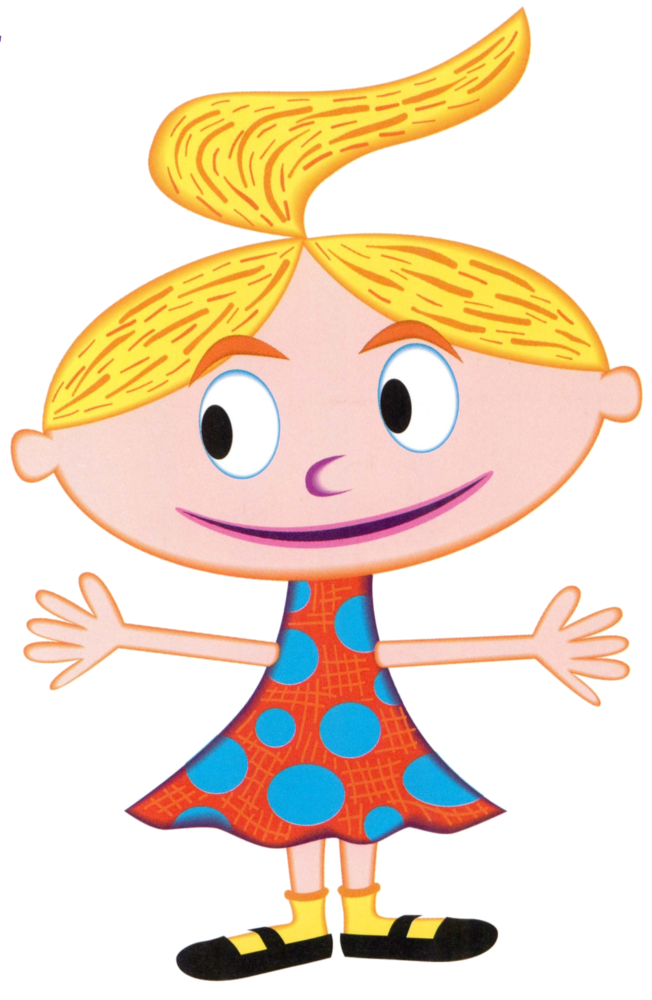
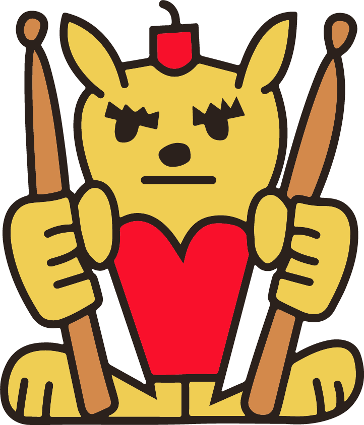

ENEN
JPJP




The Hip Hop Hero





★ MAGAZINES ★★ 雑誌 ★
A collection of magazine features, reviews, and cover appearances for PaRappa the Rapper across Japanese and international gaming publications. PaRappa was featured in publications such as Famitsu, Dengeki PlayStation, PlayStation Magazine, GameFan, and Electronic Gaming Monthly. These scans document the game's critical reception and cultural impact throughout the late 1990s and early 2000s. 日本および海外のゲーム雑誌に掲載された、パラッパラッパーの特集記事、レビュー、表紙掲載のコレクションです。パラッパは『ファミ通』『電撃PlayStation』『PlayStation Magazine』『GameFan』『Electronic Gaming Monthly』といった誌面で取り上げられました。これらのスキャンは、1990年代後半から2000年代初頭にかけての本作の評価と文化的影響を記録するものです。
— PARAPPA THE RAPPER RELATED —— パラッパラッパー関連 —


— COMPUTER & VIDEO GAMES — TGS 1996 —— Computer & Video Games — 東京ゲームショウ1996 —


— JUGEMU — MARCH 1999 —— じゅげむ — 1999年3月号 —


— OFFICIAL U.S. PLAYSTATION MAGAZINE — NOVEMBER 1997 —— Official U.S. PlayStation Magazine — 1997年11月号 —

.thumb.webp)

.thumb.webp)
.thumb.webp)
.thumb.webp)
.thumb.webp)
.webp)
.webp)
— PICT-UP — CHARACTER EXPO 01 —— ピクトアップ — キャラクターエキスポ01 —
Scans courtesy of u/flannelboyy on Reddit.スキャン提供：Redditユーザー u/flannelboyy さん。


— MANIAC (GERMANY) — 5/99 — TOKYO GAME SHOW '99 —— MANIAC（ドイツ）— 1999年5月号 — 東京ゲームショウ'99 —


— OFFICIAL U.S. PLAYSTATION MAGAZINE — JUNE 1999 —— Official U.S. PlayStation Magazine — 1999年6月号 —


— PSM — JUNE 1999 —— PSM — 1999年6月号 —


— UM JAMMER LAMMY RELATED —— ウンジャマ・ラミー関連 —